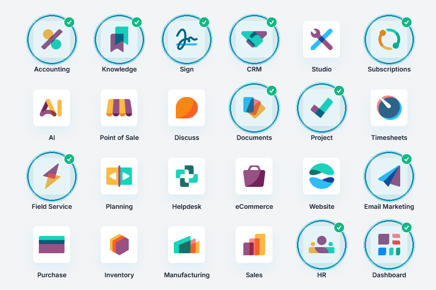
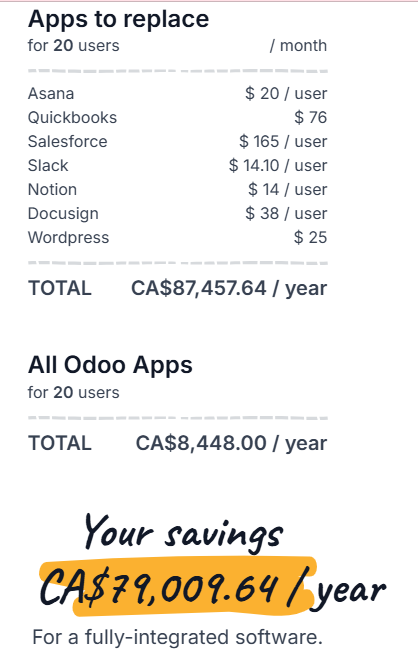

Reimagining WaterAid Canada with AI and Open-Source
Breaking the non-profit administrative trap: How an open-source foundation and an AI orchestration layer can multiply our mission impact by 4.2x without growing overhead.
A Lean Team with a Monumental Mandate
WaterAid Canada punches far above its weight on the global stage.
Resource Mobilization
Inspiring Canadian individuals, corporate partners, and major donors to invest in sustainable water, sanitation, and hygiene worldwide.
Policy & Institutional Grants
Leading international advocacy and stewarding multi-million-dollar federal grants with Global Affairs Canada (GAC) and multilateral institutions.
The Global Federation Model
Partnering across an autonomous international federation to deliver clean water programs directly through local Country Programmes in Africa and Asia.
The Non-Profit Scaling Paradox
Every new grant and donor currently creates an exponential administrative burden.
The Proprietary SaaS Tax
Legacy suites like Blackbaud cost $48,000+/year in licensing fees alone. Because donors strictly cap administrative overhead, every software dollar is a dollar diverted from clean water.
The Spreadsheet Drag
Donor history in Raiser's Edge, GAC contract terms in SharePoint, and WASH field metrics in disconnected Excel sheets. Staff spend up to 15 hours each week manually reconciling data.
The Overhead Growth Ceiling
Under today's model, doubling our water impact requires doubling administrative headcount. Non-profit governance rules make that impossible. We need a new way to scale.
Reinvesting Software Rent into Mission Capacity
Replacing expensive proprietary software with open-source Odoo, augmented by an AI co-pilot.
An Open-Source Operating Backbone
Instead of paying thousands to private software monopolies, WaterAid Canada deploys Odoo Community hosted securely on Canadian soil. One unified database uniting donors, grant agreements, accounting, and field tickets.
An AI Orchestration Layer
Intelligent digital assistants sit on top of Odoo via standard APIs. They read field data, check GAC grant obligations, and draft donor updates—presenting audit-ready briefs for human approval.
The Joined-Up Architecture
How open-source software, AI agents, and human oversight connect seamlessly.

Circled in cyan: CRM & Subscriptions, Docs & Sign, Project & Field Service, Accounting, Email, HR, Dashboard.
System of Record (Odoo)
One unified database in Canada holding donor relationships, field service pump logs, and institutional grant milestones.
System of Intelligence (AI Multi-Agent)
Specialized agents connect via Python JSON-RPC to synthesize messy field data, audit GAC grant compliance, and draft personalized donor appeals.
Human-in-the-Loop Review Desks
Humans hold the keys: AI never sends an email or files a grant. Staff review citation-backed drafts with full sign-off authority.
The Impact-to-Donor Synthesizer
Turning raw field inspection logs into verified donor stewardship briefs in seconds.
> 3,240 villagers in Kijana Sector B-4
> 70% women water committee established
Clicking any green badge reveals the technician signature and sensor timestamp.
A Disciplined 3-Year Operational Roadmap
Clear 36-month horizon with built-in leadership gates at Month 6, 18, and 30.
Deploy Odoo sandbox on Canadian cloud; pilot Impact Synthesizer with Ontario Clean Water Alliance.
Integrate GAC grant contract auditor, Project tasks, and Country Programme Field Service tickets.
Full fund accounting reconciliation, board intelligence, and open-sourcing API mesh for global federation partners.
Leading Canada's Non-Profit Digital Commons
Transforming WaterAid Canada from a software consumer into a national open-source standard-bearer.
Liberating 86,000 Charities
Canadian charities spend hundreds of millions on US SaaS just to comply with strict CRA Regulation 3501 tax rules.
addons/wateraid_fundraising provides free, audit-ready CRA tax receipting and CFAP fund designations.
A Shared Digital Commons
Instead of paying recurring software rent, Canadian non-profit peers can co-maintain a single open GitHub repository.
Global Federation Blueprint
Fulfills the Hackathon Stretch Goal: WaterAid Canada respects independent governance without top-down IT mandates.
Bringing Clean Water to 140,000 More People
By eliminating $105,000 in proprietary software licensing and multiplying staff capacity by 6,800 hours every year, WaterAid Canada gains the power of 4 senior specialists—devoted entirely to life-saving water programs.
3-Way Cost Analysis (20-User Benchmark)
Comparing the fragmented SaaS status quo, Odoo Hosted, and our Self-Hosted AI Blueprint.
8 fragmented tools (Blackbaud, QuickBooks, Asana, DocuSign, Slack).
All Odoo apps included. Saves CA$79,010/yr. Global shared cloud.
Saves >CA$221k 3-yr. 100% Canadian data residency (PIPEDA) + AI agents.

Official Odoo.com benchmark: CA$79k/yr savings on software alone.